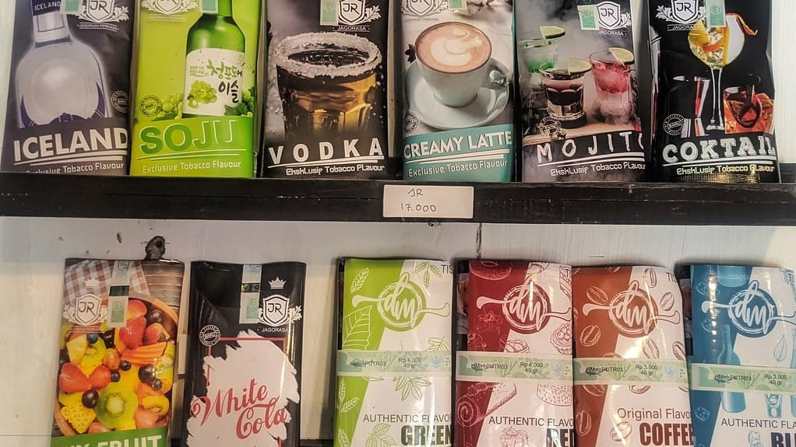

Tembakau
Ada banyak jenis tembakau di Indonesia, oleh sebab itu kami kategorikan termbakau sebagai berikut. Anda dapat memilih opsi yang lebih spesifik dibagian Pilih Opsi.


Ada banyak jenis tembakau di Indonesia, oleh sebab itu kami kategorikan termbakau sebagai berikut. Anda dapat memilih opsi yang lebih spesifik dibagian Pilih Opsi.